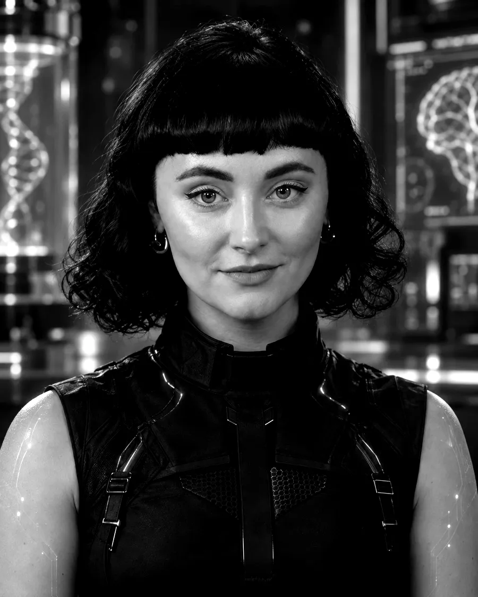

Escuela de Derecho · PUCV · Valparaíso
La IA ya
escribe
Derecho.
Aquí aprendes a usarla, a verificarla y a construir con ella. Con EVA, la inteligencia artificial del curso. Sin crear cuenta.
Fig. 01: Escudo de la EscuelaPro Jure et Aequitate · trazado 1:10
Estudio de trazado
8Cursos abiertos
32módulosCuatro por curso
16cápsulasEVA explica en 5 min
0Cuentas que crear
01 Cursos
Ocho cursos.
Una pregunta cada uno.
Todos los cursos y videocápsulas
| No. | Curso | Módulos |
|---|
02 Docentes
Cada módulo empieza
como un plan de clase.
Guía docente del módulo 1.1, «¿Qué es una IA? Ponla a tomarte el examen».
Lámina D-101: Panel de secciónCurso 1 · sección 3 · 28 estudiantes (ficticia)
● Sin datos personales
Dibujado por EVAHoja D-101 · Rev. A
03 EVA
Pregúntale a EVA.
Y después, verifícala.
Maqueta: respuestas de ejemplo, sin IA conectada.
Fig. 03: EVAInteligencia artificial · no es una persona
